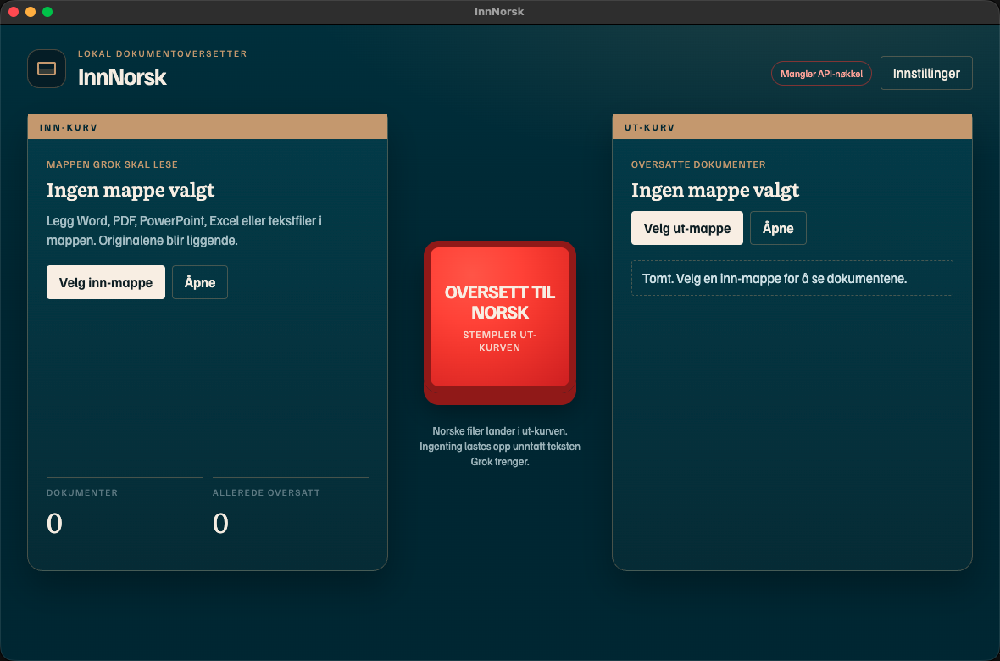

Windows-app · xAI Grok
Dokumenter inn.
InnNorsk oversetter Word, PDF, PowerPoint, Excel og tekstfiler til bokmål eller nynorsk. Filene blir på maskinen din. Grok får bare teksten som skal oversettes.
Last ned for Windows
Zip-fil · Windows 10/11 · 64-bit · API-nøkkel fylles inn etter installasjon

Pakk ut og kjør
Dobbeltklikk InnNorsk.exe . Hvis Windows advarer, velg Mer info → Kjør likevel. Appen er usignert, ikke farlig av den grunn.
Lim inn xAI-nøkkelen
Åpne Innstillinger i appen. Hent nøkkel på console.x.ai og lim den inn. Den lagres bare lokalt.
Velg mappe og stemple
Legg dokumentene i en mappe, velg den som inn-kurv, og trykk det røde stemplet. Ferdige filer lander i ut-kurven.
InnNorsk · oversetter med Grok via api.x.ai